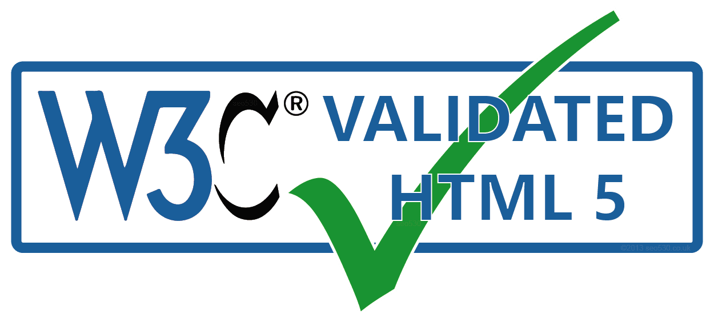

Introduction
W3C
The Web Real-Time Communications Working Group has published WebRTC 1.0: Real-Time Communication Between
Browsers as a W3C Recommendation. This document defines a set of JavaScript APIs to allow media and
generic application data to be exchanged with another browser or device implementing the appropriate set
of real-time protocols defined in IETF.
HTML
HTML (Hypertext Markup Language) is the code that is used to structure a web page and its content. For
example, content could be structured within a set of paragraphs, a list of bulleted points, or using
images and data tables
CSS
Cascading Style Sheets (CSS) is a style sheet language used for describing the presentation of a
document written in a markup language such as HTML. CSS is a cornerstone technology of the World Wide
Web, alongside HTML and JavaScript.
Examples
The World Wide Web Consortium (W3C) was founded in 1994 by Tim Berners-Lee after he left the European
Organization for Nuclear Research (CERN) in October, 1994. It was founded at the Massachusetts Institute of
Technology Laboratory for Computer Science (MIT/LCS) with support from the European Commission, the Defense
Advanced Research Projects Agency (DARPA), which had pioneered the ARPANET, one of the predecessors to the
Internet. It was located in Technology Square until 2004, when it moved, with CSAIL, to the Stata
Center.

The organization tries to foster compatibility and agreement among industry members in the adoption of new
standards defined by the W3C. Incompatible versions of HTML are offered by different vendors, causing
inconsistency in how web pages are displayed. The consortium tries to get all those vendors to implement a
set of core principles and components that are chosen by the consortium.
Why we use theses?
Web document Creation
HTML is heavily used for creating pages that are displayed on the world wide web. Every page contains a set of
HTML tags including hyperlinks which are used for connecting to other pages. Every page that we witness, on the
world wide web, is written using a version of HTML code.
Web pages development
Document creation on the internet is dominated by HTML and its basic concept via tag and DOM i.e. document
object model. HTML tags are inserted before and afterward or phrases to locate their format and location on the
page. A web document consists of three sections: title, head, and body. Head includes the information to
identify the document, including title and any other important keyword. A title can be seen on the browser’s bar
and the body section is the main portion of the website visible to the viewer. All three segments are designed
and created by the uses of HTML tags. Every section has its own specific set of tags, which are dedicatedly
rendered keeping the head, title and body concepts in a loop.
Internet navigation
This is one of the most important uses of HTML which is revolutionary. This navigation is possible by utilizing
the concept of Hypertext. It is basically a text which refers to other web pages or text and when user click on
it, would navigate to referenced text or page. HTML is heavily used to embed the hyperlink within the web pages.
A user can easily navigate within the web pages and between websites as well, which are located on different
servers.